BGP 跨洋专线直连
接入深港、沪日及美西多条运营商级 IEPL 物理内网通道，绕开公网国际出口拥塞节点，端到端往返延迟最低可至 26ms，晚高峰黄金时段依旧保持满速吞吐。
山水云融合多维 BGP 智能选路与高冗余内网专线，告别晚高峰拥堵与分片丢包。无论是 4K HDR 视听盛宴、跨国科研文献同步，还是前沿大模型深度交互，皆可享受极速秒开的无界体验。

从物理层内网入口到边缘智能中继，山水云以暖陶般扎实稳健的底层工程，为您构筑全天候高吞吐传输链路。
接入深港、沪日及美西多条运营商级 IEPL 物理内网通道，绕开公网国际出口拥塞节点，端到端往返延迟最低可至 26ms，晚高峰黄金时段依旧保持满速吞吐。
云端调度中心每 15 秒对全球 60 余处边缘节点进行丢包率与抖动探测，一旦检测到海底光缆波动，自动在 80 毫秒内无感切换至最优备份路由。
全面采用新一代抗特征识别协议与椭圆曲线密钥交换机制，全节点无盘化内存运行，严格践行零访问日志策略，守护您的商业机密与个人数字足迹。
原生适配 Windows、macOS、iOS、Android 以及 OpenWrt 软路由透明网关，提供精细化分流规则集，国内应用直连不减速，海外流量精准走专线。
深度部署高纯净度原生家庭住宅与商宽落地 IP，全方位解锁全球流媒体影音库与生成式 AI 创作平台。
原生解锁港区、美区、日区、新家坡及英区全量片库，支持高码率 Dolby Vision 与无损音轨直通，拖动进度条零缓冲等待。
针对海外大模型 API 与交互界面定制高信誉度独享出口，彻底规避频繁验证码拦截与区域封锁，保障长文本流式输出不断连。
优化上行信道带宽与 UDP 传输队列，为跨境电商直播、海外学术数据库文献同步以及跨国视频会议提供专线级稳定保障。
灵活透明的阶梯式流量配置，全系标配高速内网中继与流媒体解锁能力，满足不同强度的用网需求。
适合日常网页浏览、海外文献查阅与轻度高清视频用户
专为 4K 影音发烧友、远程开发者与重度 AI 创作者打造
面向跨境工作室、多设备家庭组网与高并发数据传输场景
解答关于客户端导入、分流策略、晚高峰速率保障以及多设备协同的核心疑问。
注册并开通套餐后，仪表盘支持一键拉起 Clash Verge Rev、Mihomo Party、Shadowrocket、Stash、Quantumult X、Sing-box 以及 Surge 等主流客户端，无需繁琐手动配置即可自动同步最新节点与分流规则。
完全不会。山水云内置每日更新的 GeoIP 与域名直连白名单，访问国内电商、网银、政务网站及国内音视频平台时均走本地宽带直连，仅对海外受阻目标与指定学术流媒体域名启用跨洋加速通道。
山水云的核心节点采用内网专线（IEPL）传输，不经过拥堵的公网国际出口，并配合 TCP MSS 动态调优与智能负载均衡，即便在每晚 20:00 至 23:30 的用网最高峰，依然能流畅播放 4K 60帧超清视频。
可以。霞光极速版与星河旗舰版完美支持 OpenWrt 旁路由透明网关（PassWall / OpenClash）及 tvOS 端客户端。您可以在 山海漫谈 专栏查阅详尽的软路由部署与防 DNS 泄漏指南。
来自独立开发者、高校科研人员与跨境内容团队的长测反馈。
“之前用过不少普通中转服务，一到晚上八点拉取 Docker 镜像或者调用 Claude API 就频繁超时。换到山水云霞光版之后，深港 IEPL 节点的响应几乎像在本地局域网一样跟手，半年来从未掉过链子。”
“课题组每天需要批量检索 IEEE Xplore 与 Google Scholar 文献并通过 Zotero 同步 PDF 全文。山水云的纯净学术节点不仅极速秒开，而且极少触发人机验证弹窗，为我们节省了大量宝贵的科研时间。”
“家里通过软路由配置了山水云透明网关，客厅的 Apple TV 看 Netflix 4K 杜比视界秒加载，书房电脑推流海外直播上行码率稳稳锁在 8000kbps 不掉帧，真正实现了全屋无感丝滑加速。”